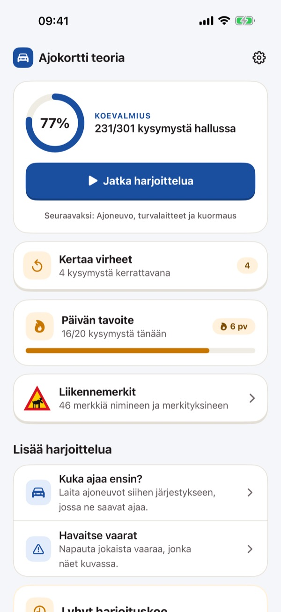
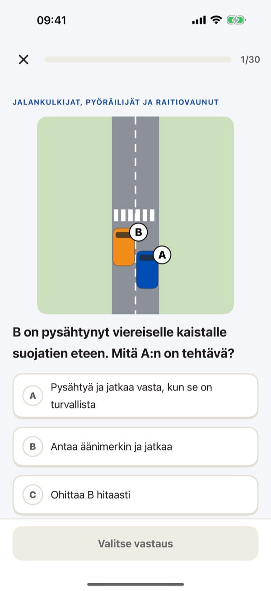
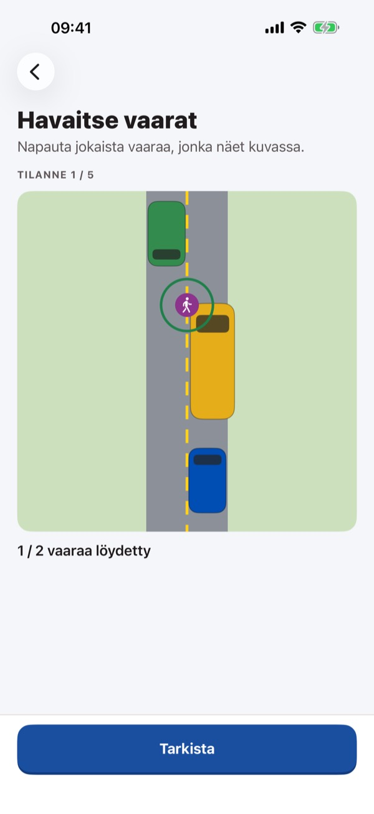
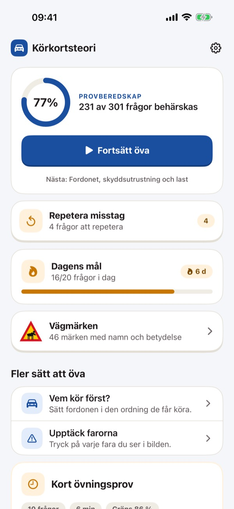
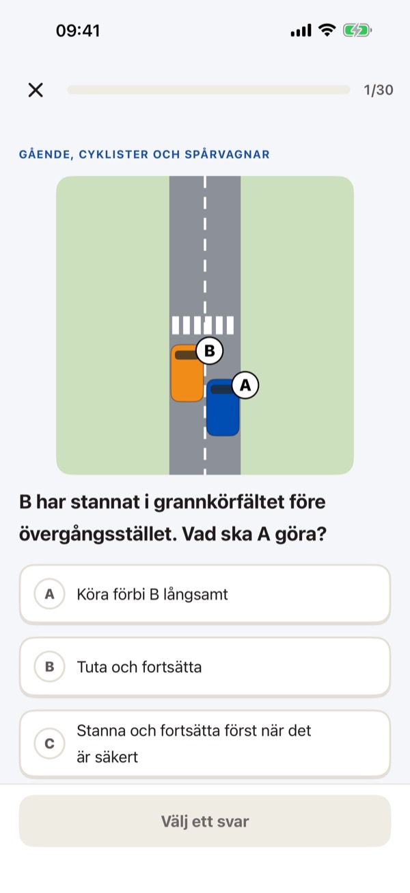
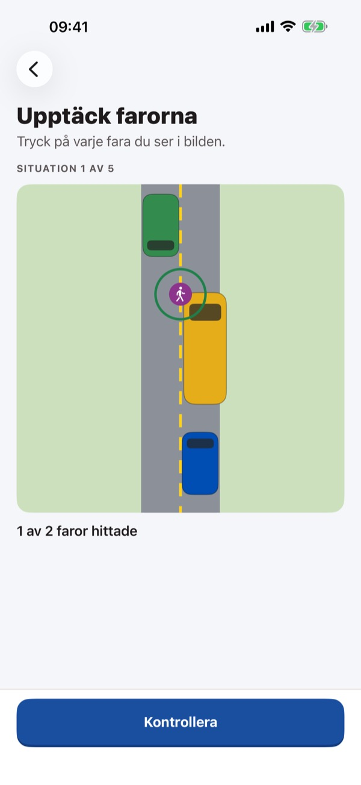
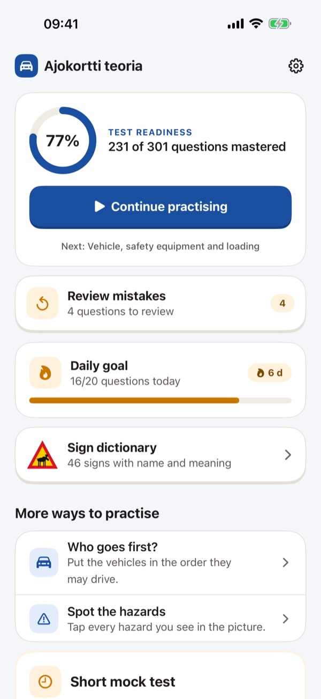
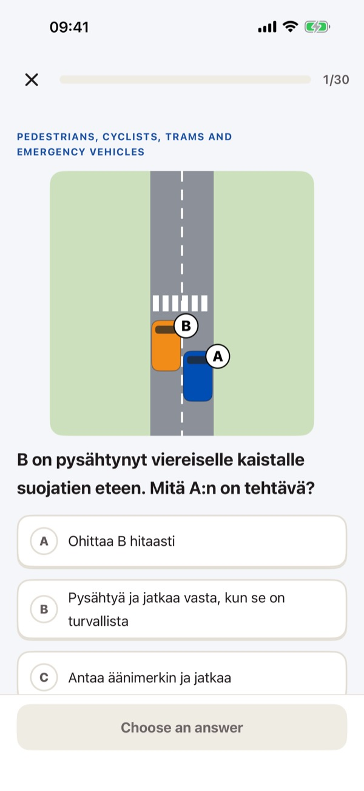

Liikennemerkit ja harjoituskoe



Valmistaudu henkilöauton (B) ajokortin teoriakokeeseen. 300 kysymystä 12 aiheesta, jokaiseen selitys ja viittaus tieliikennelakiin. Maksa kerran, ei tilausta.
Teoriakokeen voi suorittaa suomeksi tai ruotsiksi, joten kysymykset ovat molemmilla kielillä. Selitykset voit lukea suomeksi, ruotsiksi tai englanniksi.
Kokeile liikennemerkkejä, etuajo-oikeutta, merkkihakemistoa ja lyhyttä harjoituskoetta ilman ostoa. Avaa kaikki yhdellä ostolla. Ei tilausta, ei mainoksia, ei tiliä. Toimii ilman verkkoyhteyttä.
Sovellus on itsenäinen eikä liity Traficomiin, Ajovarmaan tai muihin viranomaisiin. Kysymykset ovat omiamme ja perustuvat tieliikennelakiin 729/2018; ne eivät ole virallisia koekysymyksiä. Liikennemerkit on piirretty itse. Täyden harjoituskokeen rakenne (osat, tehtävämäärät, rajat ja aika) noudattaa Traficomin teoriakoemääräystä, mutta kysymykset ja kuvat ovat omiamme, joten tulos on suuntaa antava.
Tietosuojakäytäntö: https://baytechbv.github.io/privacy/ajokortti-teoria-fi/
Käyttöehdot (EULA): https://www.apple.com/legal/internet-services/itunes/dev/stdeula/
Teoriprov B och vägmärken



Förbered dig för teoriprovet för personbilskörkort (B) i Finland. 300 frågor i 12 ämnen, var och en med förklaring och hänvisning till vägtrafiklagen. Betala en gång, ingen prenumeration.
Teoriprovet kan avläggas på svenska eller finska, och frågorna finns på båda språken. Förklaringarna kan du läsa på svenska, finska eller engelska.
Pröva vägmärken, förkörsrätt, märkesregistret och det korta övningsprovet utan köp. Lås upp allt med ett köp. Ingen prenumeration, ingen reklam, inget konto. Fungerar utan internet.
Appen är fristående och har ingen koppling till Traficom, Ajovarma eller andra myndigheter. Frågorna är våra egna och bygger på vägtrafiklagen 729/2018; de är inte officiella provfrågor. Vägmärkena är egna ritningar. Det fullständiga övningsprovets uppbyggnad (delar, antal uppgifter, gränser och tid) följer Traficoms föreskrift om teoriprov, men frågorna och bilderna är våra egna, så resultatet är vägledande.
Integritetspolicy: https://baytechbv.github.io/privacy/ajokortti-teoria-fi/
Användarvillkor (EULA): https://www.apple.com/legal/internet-services/itunes/dev/stdeula/
Finnish road signs, mock tests


Prepare for the Finnish car (B) driving licence theory test. 300 questions in 12 topics, each with an explanation and a reference to the Road Traffic Act. Pay once, no subscription.
The theory test is taken in Finnish or Swedish, so the questions are in those languages, just like the real test. After each answer you read why it is right or wrong in English (or Finnish or Swedish), so you learn the rules and the words at the same time.
Try road signs, right of way, the sign dictionary and the short mock test without a purchase. Unlock everything with one purchase. No subscription, no ads, no account. Works offline.
This app is independent and not affiliated with Traficom, Ajovarma or any authority. All questions are our own, based on the Road Traffic Act 729/2018; they are not official test questions. Road signs are our own drawings. The full mock test follows the structure of Traficom's theory test regulation (parts, number of tasks, pass marks and time), but the questions and pictures are our own, so the result is indicative.
Privacy: https://baytechbv.github.io/privacy/ajokortti-teoria-fi/
Terms of Use (EULA): https://www.apple.com/legal/internet-services/itunes/dev/stdeula/